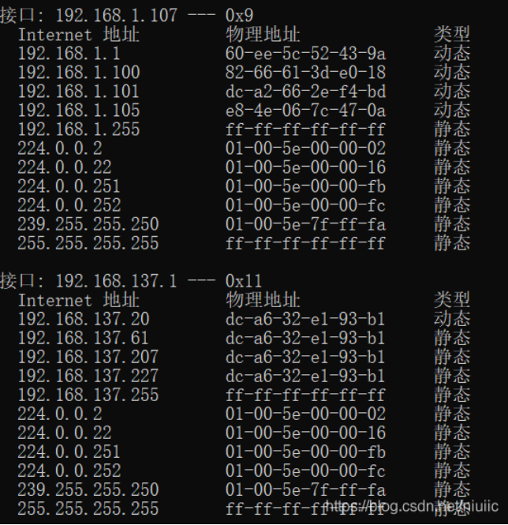
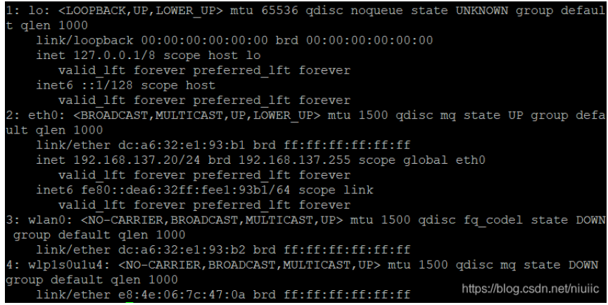
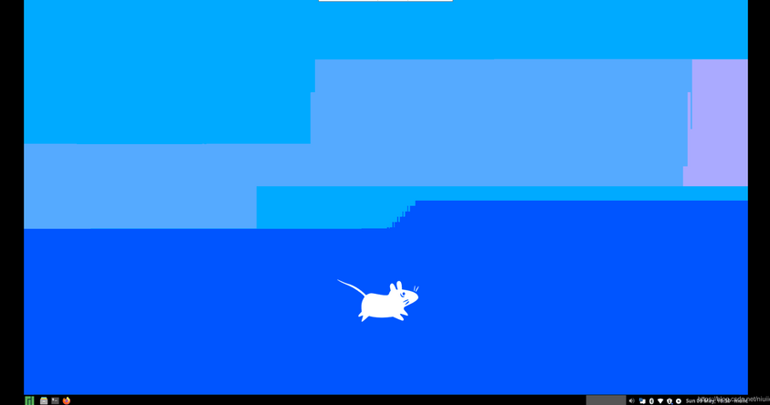

在树莓派 4 上安装 manjaro
本文介绍如何在树莓派 4 上安装系统并做一定的性能提升。
方案介绍
- 放弃孱弱的 SD 卡，使用固态硬盘从 USB 引导启动。
- 加装 USB 网卡，解决内置网卡被外壳屏蔽的问题。
- 使用 64 位 manjaro 系统。既容易安装，又可以使用 arch 庞大的软件库，还更加稳定。
- SD 卡接口读写速度大概在几十 M 左右，换成 USB3.0 后可以达到几百 M，差不多可以翻 10 倍。
- 如果使用全封闭式金属外壳，内置网卡甚至总是连不上网。不过就算全敞开，也不见得有号称的千兆网卡的性能。
- 使用 manjaro 主要是软件比较新而且丰富。不使用 arch 主要还是没空折腾。
硬件准备
- 一张 SD 卡（16G 就可以）。
- 一个 USB 读卡器。
- 一个免驱 USB 网卡。
- 一个的 128G 固态硬盘。
- 一条网线。
- 固态的容量不需要很大。因为树莓派不能当电脑用，不需要安装过多软件。如果要存储，可以另加。
- 不需要使用 m2 接口的固态。因为 USB3.0 接口的读写速度有限，500M/s 读写速度的硬盘就足够了。
设置从 USB 引导
设置从 USB 引导需要升级固件并做设置。
如果是较新的树莓派 4，固件已经不需要升级。不过为了方便做设置，也需要进行以下步骤。
安装 Raspberry Pi OS
访问树莓派系统官网下载 Raspberry Pi Imager。
用该软件向 SD 卡中写入 Raspberry Pi OS 镜像（只有字符界面的就可以）。
写完后拔下读卡器。
以下假设电脑有以太网接口，且为 windows 系统（其他情况上网查找如何连接树莓派）。
打开 windows 中的更改适配器设置。将当前联网的适配器，如 wifi，共享给以太网接口（新版本的 windows 中已经没有具体共享给哪个接口的选项，只需要设置共享即可）。
把卡插入树莓派，用网线连接树莓派与电脑，启动树莓派。
待树莓派启动后（查看网络适配器，发现以太网接口已经连接，只是无法识别），打开 cmd，输入arp -a。结果如下所示。

一般进行上述设置后，以太网接口的 ip 变成192.168.137.1。如果是别的，需要根据实际 ip 修改下面的设置。
为什么要共享网络。虽然不共享网络也会有以太网 ip。但是这个 ip 基本不会是 192.168 开头的，会影响到树莓派连接 wifi。
给树莓派断电，拔出 SD 卡，再用读卡器插回电脑。
现在可以看到的是树莓派系统的 boot 分区。修改cmdline.txt的第一行，再开头添加ip=192.168.137.20。192.168.137是网段，这一段必须和前面查出的一致。最后一个数字可以随便选择，这里以 20 为例。
新建 SSH 文件。注意该文件空白且无后缀。这是为了正常启用 SSH。
再把 SD 卡插回树莓派，启动。
等树莓派完全启动后就可以在电脑上使用 putty 或者其他软件通过192.168.137.20访问树莓派。默认用户为 pi，密码为 raspberry。
登录后，先来连接网络。首先把免驱 USB 网卡插到 USB2.0（黑色）接口上。
一般家用网络传输速度不会超过 USB2.0 的传输速度，所谓的千兆网卡一般也不行。当然如果另一个 USB3 没用的话可以插上。
由于是字符界面，因此使用命令行工具来连接。
# wifi name 和 password 改成实际的值。wifi名称可以在手机或者电脑上看。
wpa_passphrase "wifi name" password > internet.conf
# wlan0是内置网卡接口的名称。可以使用ip a来查看USB网卡的名称，然后使用USB网卡。
sudo wpa_supplicant -c ./internet.conf -i wlan0 &
sudo dhcpcd &连上网后，给系统换源。
# 编辑/etc/apt/sources.list，修改内容为
deb http://mirrors.tuna.tsinghua.edu.cn/raspbian/raspbian/ buster main non-free contrib
deb-src http://mirrors.tuna.tsinghua.edu.cn/raspbian/raspbian/ buster main non-free contrib
# 编辑/etc/apt/sources.list.d/raspi.list，修改内容为
deb http://mirrors.tuna.tsinghua.edu.cn/raspberrypi/ buster main ui更新固件
sudo apt update
sudo apt full-upgrade
# 编辑/etc/default/rpi-eeprom-update，修改为
FIRMWARE_RELEASE_STATUS="stable"
sudo rpi-eeprom-update -d -a设置引导顺序
使用sudo raspi-config启动配置工具。在其中设置 boot order 即可。
安装 manjaro
前往清华镜像站下载自己想要的系统。
如果你需要桌面，且又不想耗费太多性能，可以选择 i3 或者 xfce 桌面。如果你不熟悉 wayland，最好不要选择 sway。
下载完成之后，使用树莓派镜像刻录工具将镜像写入固态硬盘中。
写完后拔出固态，再插回。在cmdline.txt文件的第一行开头加上ip=192.168.137.20，然后再新建SSH文件。
把固态硬盘接到树莓派 USB3 接口（蓝色）上，上电。
初始设置
使用root用户登录。首次登录无密码，直接进入设置页面。自行设置。
- 一般的键盘，其布局为 us。
- 时区选择
Asia/Shanghai。 - locale 可以选
en_US.UTF-8或者zh_CN.UTF-8。
设置完成后会自动重启。
连接网络
使用ip a查看网络连接情况，结果如下。

- 关闭内置网卡。
sudo ip link set wlan0 down - 连接 wifi。
sudo nmcli d wifi connect "KFC_free" password "12345678"第一步的目的是让 NetworkManager 在树莓派启动时不会自动使用 wlan0 连接 wifi。如果第一次联网时不先关闭 wlan0，则下次联网时两个接口都会获得 ip。但是系统一次只能用一个，如果用到内置网卡，可能就会影响速度。如果你熟悉网络方面的设置，可以设置轮流使用两个网卡。比如一个网卡在下载，用另一个网卡浏览网页。本文不做这方面介绍。
换源
sudo pacman-mirrors -i -c China -m rank
# 编辑 /etc/pacman.conf，在最后写入
[archlinuxcn]
SigLevel = Optional TrustAll
Server = http://mirrors.163.com/archlinux-cn/$arch
# 更新
sudo pacman -Syyy
- 为了稳定，只使用 manjaro 的稳定源，不添加 arch 源。
- 清华源总是莫名其妙的对 ip 限流，个人选择绕开它。
安装 yay。sudo pacman -S yay
换源。yay --aururl "https://aur.tuna.tsinghua.edu.cn" --save
这个只能选清华源了。
升级所有软件。sudo pacman -Syu
VNC
设置远程连接桌面。
sudo pacman -S tigervnc
# 设置密码
vncpasswd
# 配置用户，把niuiic换成自己的用户名
if [ -z "$(grep niuiic /etc/tigervnc/vncserver.users)" ];then
#sudo sed -i '/niuiic/d' /etc/tigervnc/vncserver.users
echo " :1=niuiic" | sudo tee -a /etc/tigervnc/vncserver.users
fi
# 查看自己的桌面。注意如果你前面安装了sway桌面，这里就麻烦了。
# 因为sway使用wayland协议，你压根不会有这个目录。
# 可以参考https://github.com/swaywm/sway/issues/100自己设置。
ls /usr/share/xsessions/
# 编辑~/.vnc/config
# session是桌面名，geometry是分辨率。
session=xfce
geometry=1920x1080
alwaysshared
# 启动vnc
# 默认端口为5901
sudo systemctl enable vncserver@:1
sudo systemctl start vncserver@:1下载 vncviewer 软件。使用192.168.137.20:5901连接树莓派。以下是连接成功后的桌面截图。有点黑边，调整下软件窗口大小即可。

vulkan
安装 vulkan 只是为了测试一些特定的包。不需要的可以略过。（想玩游戏的就省省吧，树莓派这性能还跑不了需要 vulkan 的游戏，除非是你自己写的贪吃蛇~~。）
sudo pacman -Syu linux-rpi4-rc linux-rpi4-rc-headers mesa-git
# 如果显示没有xf86-video-fbturbo包，就不管它。
sudo pacman -U xf86-video-fbturbo目前 mesa-git 还不支持 DRI3。
还有一件事，源里的 v2ray 有点问题，去 GitHub 上下个吧。
到此为止了，其他配置网上都查得到，多数也都是正确的，不需要折腾。